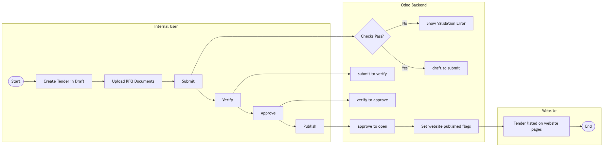
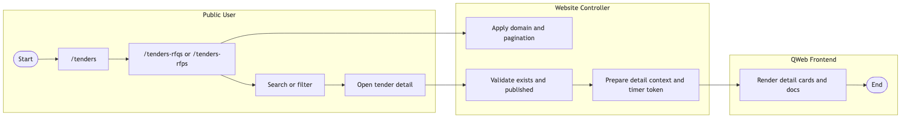
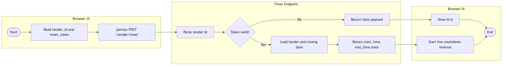
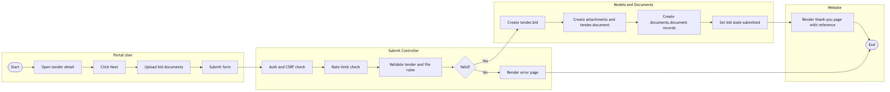
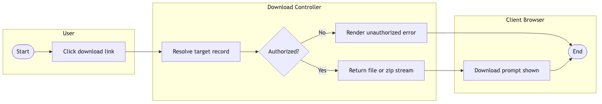
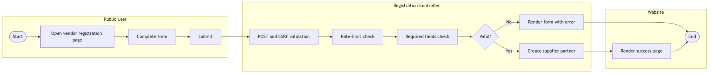
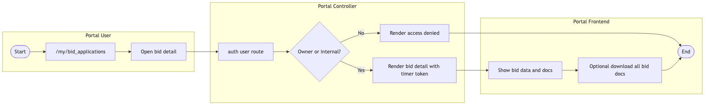
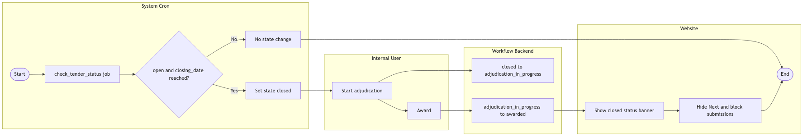

Tender Management User Guide
Audience: Procurement and vendor users (non-technical)
Date: 2026-03-09
1. What This System Is For
This system helps your organization publish tenders, receive bid submissions, and track bid outcomes in one place. It also allows vendors to register and submit bids online.
2. Who Uses This System
Internal Procurement Team
- Create and publish tenders
- Review submissions and move tenders through approval and award stages
Vendors
- Register as vendors
- View open tenders and submit bid documents
- Track submitted bids in the portal
3. User Journey - Internal Team
- Step 1: Create Tender
- Step 2: Upload RFQ Documents
- Step 3: Move statuses: Submit -> Verify -> Approve -> Publish
- Step 4: Enable bidding when ready
- Step 5: Manage adjudication and award after closure
4. User Journey - Vendor
- Step 1: Register as vendor
- Step 2: Find a tender from RFQ/RFP pages
- Step 3: Review tender details and documents
- Step 4: Upload bid documents and submit
- Step 5: Track your submitted bid in portal
5. Business Rules Users Must Know
- RFQ documents are mandatory before key status changes
- Bid submission works only when bidding is enabled and tender is still open
- Submission closes based on closing date/time and status
- Bid document upload is mandatory
6. Common Errors and What To Do
- Upload is mandatory: Attach at least one supported document and retry
- Tender not available: Tender may be closed, unpublished, or bidding disabled
- Not authorized: Use the correct account for that bid/tender
- Timer N/A: Refresh page, then contact support if persistent
Graphical BPMN Process Flows
The following BPMN-style process diagrams are included for visual flow understanding.
Diagram A: Tender Authoring to Publication

Figure: Diagram A: Tender Authoring to Publication
Diagram B: Public Tender Discovery and Detail Access

Figure: Diagram B: Public Tender Discovery and Detail Access
Diagram C: Countdown Timer

Figure: Diagram C: Countdown Timer
Diagram D: Bid Submission End to End

Figure: Diagram D: Bid Submission End to End
Diagram E: Secure Document Download

Figure: Diagram E: Secure Document Download
Diagram F: Vendor Registration

Figure: Diagram F: Vendor Registration
Diagram G: Portal Bid Tracking

Figure: Diagram G: Portal Bid Tracking
Diagram H: Close, Adjudication, and Award

Figure: Diagram H: Close, Adjudication, and Award
7. Support Handover
When reporting issues, include tender reference number, user account email, and a screenshot.